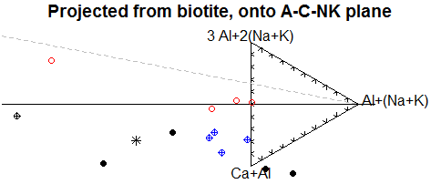

| projbioplot | R Documentation |
The function projbiocoords calculates the coordinates used to define the projection,
whereas projbioplot calls projbiocoords and does the other operations needed
to define a template that will be used by plotDiagram.
projbioplot(mins=FALSE,addWR=FALSE,ticks=FALSE,xmin=-2,xmax=1,ymin=-0.5,ymax=0.5)
projbiocoords(where=WR,add=FALSE)
mins |
Boolean. If |
addWR |
Boolean. If |
ticks |
Boolean. If |
xmin, xmax, ymin, ymax |
Numeric. Bounds of the plotting area, in rectangular coordinates. Note that the vertical axis (left side) is at x=0; (ms1 = 3 al + 2 (Na + K) is at x=0 and y=0.5, and CaAl = Ca + Al is at x=0 and y=-0.5); the fsp (=Al + (Na + K) ) is at x=√{3}/2 and y=0. Plagioclase an50 is at x=-√{3}/2 and y=0, and most points should fall to the right of it. The defaults are therefore sensible. |
where |
A data matrix containing whole rock analyses, to be projected. By default |
add |
Boolean. If |
The "projection from biotite" of Moyen et al. (2016) is based on four coordinates based on molar proportions:
ms1 = Al - Ca - NK
fsp = -2 Al -2 Ca + 3 NK -1/3 FM
CaAl = Ca
bio = 1/3 FM
where Al = molar Al
Ca = molar Ca
FM = molar Fe + molar Mg
NK = molar Na + molar K
molar proportions are calculated by millications.
They are primarily used for plotting the relevant diagram (ms1-fsp-CaAl, note that bio is dropped during plotting as this is projected from bio).
projbiocoords calculates the coordinates. It also has the side effect of (globally)
affecting its results to results, where they are available to addResults,
r2clipboard(results), HTMLTableResults, etc.
projbioplot is used purely for defining a Figaro template. The values of the four
coordinates are calculated (and (globally) assigned to results).
If called with plotDiagram, the diagram is plotted, which is the real
use of the function.
If used as a plugin, a GUI function .projbioGUI is also supplied
(and linked to the menu item), in charge of gathering the missing arguments and
calling plotDiagram.

For projbioplot, nothing. This function is meant only to be called via plotDiagram.
projbiocoords returns a matrix of 4 columns containing the new coordinates, (ms1,fsp,CaAl,bio).
Jean-François Moyen jfmoyen@gmail.com
Moyen JF, Laurent O, Chelle-Michou C, Couzinie S, Vanderhaeghe O, Zeh A, Villaros A, Gardien V, 2016. Collision vs. subduction-related magmatism: two contrasting ways of granite formation and implications for crustal growth. Lithos in press. doi:10.1016/j.lithos.2016.09.018
and in particular the supplementary item SE4 "Multivariate statistics and projection for granitic rocks".
plotDiagram millications
data(sazava)
accessVar("sazava")
projbiocoords()
plotDiagram("projbioplot")
plotDiagram("projbioplot",mins=T,xmin=-1)